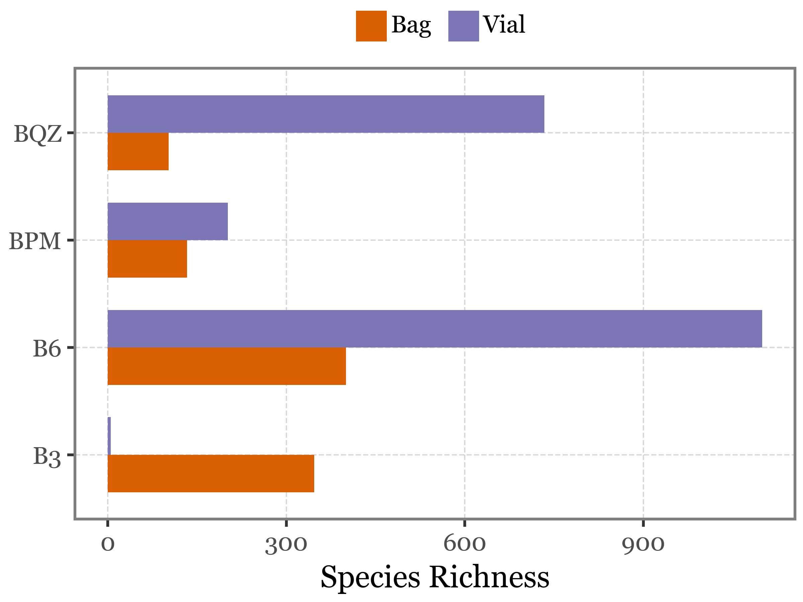

![]()
import os
import numpy as np
import pandas as pd
import plotnine as p9
import matplotlib.colors
import scipy.stats as stats
import matplotlib.pyplot as plt
from IPython.display import Image
from mizani.formatters import percent_formatIntegrating air microbiome for comprehensive air quality analysis
An evaluation of the potential of HVS for airborne microbiome monitoring
In this report, we will perform part of the analysis and generate some of the figures for the manuscript Integrating air microbiome for comprehensive air quality analysis.
For easier reading, most code cells have been hidden by default, but you can expand them by clicking on the “Show code” button above each cell. The full code should be possible to run in a local environment top to bottom.
Preamble
Show code imports and presets
In this section we load the necessary libraries and set the global parameters for the notebook. It’s irrelevant for the narrative of the analysis but essential for the reproducibility of the results.
Imports
Pre-sets
# Matplotlib settings
import matplotlib.pyplot as plt
from matplotlib_inline.backend_inline import set_matplotlib_formats
plt.rcParams['font.family'] = 'Georgia'
plt.rcParams['svg.fonttype'] = 'none'
set_matplotlib_formats('retina')
plt.rcParams['figure.dpi'] = 300
# Plotnine settings (for figures)
p9.options.set_option('base_family', 'Georgia')
p9.theme_set(
p9.theme_bw()
+ p9.theme(panel_grid=p9.element_blank(),
legend_background=p9.element_blank(),
panel_grid_major=p9.element_line(size=.5, linetype='dashed',
alpha=.15, color='black'),
plot_title=p9.element_text(ha='center'),
dpi=300
)
)
separator_line = p9.annotate(
geom='line',
linetype='dashed',
size=.2,
x=[137, 144],
y= [31, 36],
)Data loading and wrangling
We will start by loading the medatata file which we have stored in /data/meta.txt with information about each sample:
metadata_df = pd.read_table('../data/meta.txt', sep='\t')
metadata_df.head()| Sample Name | Sample Number | AirLab_Code | Seq ID | Sample ID | Sampling | Project Name | Location | Relative Location | Media Type | ... | Entered By | DNA Extraction Date (YYYY-MM-DD) | DNA Extraction Kit | DNA Concentration (ng/uL) | DNA Volume of Elution (uL) | DNA Quantification Instrument | DNA Vol. Used for Quantification (uL) | DNA Storage Freezer | DNA Storage Drawer | DNA Performed By | |
|---|---|---|---|---|---|---|---|---|---|---|---|---|---|---|---|---|---|---|---|---|---|
| 0 | 2022/11/23HVS-SASS-PilotA1 | 1 | T6.0 B | HVSP1 | C6-B | Continuous | HVS-SASS-Pilot | AirLab Terrace | Outdoor | Quartz Filter | ... | Cassie Heinle | 28/11/2022 | Phe-Chlo method (AirLab Spain) | 7133 | 17 | Quantus Promega (AirLab Spain) | 5 | -20C MPL Freezer (New) | Yee Hui | AirLab Spain |
| 1 | 2022/11/28HVS-SASS-PilotA2 | 2 | T6.1 B | HVSP2 | D6.1-B | Discrete | HVS-SASS-Pilot | AirLab Terrace | Outdoor | Quartz Filter | ... | Cassie Heinle | 28/11/2022 | Phe-Chlo method (AirLab Spain) | 856 | 17 | Quantus Promega (AirLab Spain) | 5 | -20C MPL Freezer (New) | Yee Hui | AirLab Spain |
| 2 | 2022/11/28HVS-SASS-PilotA3 | 3 | T6.2 B | HVSP3 | D6.2-B | Discrete | HVS-SASS-Pilot | AirLab Terrace | Outdoor | Quartz Filter | ... | Cassie Heinle | 28/11/2022 | Phe-Chlo method (AirLab Spain) | 1193 | 17 | Quantus Promega (AirLab Spain) | 5 | -20C MPL Freezer (New) | Yee Hui | AirLab Spain |
| 3 | 2022/11/28HVS-SASS-PilotA4 | 4 | T6.3 B | HVSP4 | D6.3-B | Discrete | HVS-SASS-Pilot | AirLab Terrace | Outdoor | Quartz Filter | ... | Cassie Heinle | 28/11/2022 | Phe-Chlo method (AirLab Spain) | 1483 | 17 | Quantus Promega (AirLab Spain) | 5 | -20C MPL Freezer (New) | Yee Hui | AirLab Spain |
| 4 | 2022/11/28HVS-SASS-PilotA5 | 5 | T6.4 B | HVSP5 | D6.4-B | Discrete | HVS-SASS-Pilot | AirLab Terrace | Outdoor | Quartz Filter | ... | Cassie Heinle | 28/11/2022 | Phe-Chlo method (AirLab Spain) | 111 | 17 | Quantus Promega (AirLab Spain) | 5 | -20C MPL Freezer (New) | Yee Hui | AirLab Spain |
5 rows × 28 columns
metadata_df = (metadata_df
.drop(columns=metadata_df.nunique().loc[lambda x: x==1].index)
.rename(columns={'Seq ID': 'sample_id'})
)We also have the total number of reads for each assigned Species for all samples, which we will load from /data/REL_hvsp_sp.txt
species_df = pd.read_table('../data/REL_hvsp_sp.txt')We have been given a list of species that are considered to be contaminants, which we will remove from the analysis:
contamination_list = [
"Galendromus occidentalis",
"Bemisia tabaci",
"Candidatus Portiera aleyrodidarum",
"Frankliniella occidentalis",
"Thrips palmi"
]Information on the total DNA yield of each sample is stored in the /data/DNA.xlsx file:
dna_yields = (pd.read_excel('../data/DNA.xlsx')
.rename(columns={
'DNA Concentration (ng/uL)': 'dna_conc',
'DNA Volume of Elution (uL)': 'dna_vol',
'Sample ID': 'sample_code'
})
.assign(dna_yield=lambda x: x['dna_conc'] * x['dna_vol'])
[['sample_code', 'dna_yield']]
)We will generate a long-form dataframe with the species counts for each sample:
species_long = (species_df
.rename(columns={'#Datasets': 'name'})
.melt('name', var_name='sample_id', value_name='reads')
.assign(sample_id=lambda x: x['sample_id'].str.split('.').str[0])
.query('name not in @contamination_list')
.query('reads > 0')
)
species_long.sample(10)| name | sample_id | reads | |
|---|---|---|---|
| 128710 | Krasilnikoviella flava | HVSP15 | 25.0 |
| 337027 | Marmoricola sp. Leaf446 | HVSP45 | 599.0 |
| 49047 | Limibaculum sp. M0105 | HVSP6 | 33.0 |
| 157388 | Nocardioides ungokensis | HVSP19 | 148.0 |
| 269015 | Rubripirellula reticaptiva | HVSP35 | 28.0 |
| 167215 | Streptomyces hoynatensis | HVSP20 | 40.0 |
| 23868 | Georgenia subflava | HVSP3 | 115.0 |
| 461309 | Jeotgalicoccus psychrophilus | HVSP59 | 133.0 |
| 403987 | Rubrobacter aplysinae | HVSP53 | 81.0 |
| 208014 | Phyllostachys edulis | HVSP26 | 28.0 |
Experiment 1: Continuous vs Discrete sampling
Let’s start by taking a look at how the DNA yield of the samples and the diversity (measured as the richness of species) compares:
Show Code
exp_1_samples = ['C3-B', 'D3.1-B', 'D3.2-B', 'D3.3-B', 'C6-B', 'D6.1-B', 'D6.2-B',
'D6.3-B', 'D6.4-B', 'D6.5-B', 'D6.6-B',]
exp1_names = [s.split('-')[0] for s in exp_1_samples]
exp_1_meta = (metadata_df
.query('`Sample ID` in @exp_1_samples')
.assign(sampling_days=lambda x: x['Sample ID'].str[1])
.rename(columns={'Sample ID': 'sample_code', 'Sampling': 'mode'})
[['sample_id', 'sample_code', 'mode', 'sampling_days']]
.merge(dna_yields, on='sample_code')
)
(species_long
.query('reads > 0')
.groupby('sample_id')
.size()
.reset_index(name='richness')
.merge(exp_1_meta)
.assign(sample_code=lambda dd: dd.sample_code.str.split('-').str[0])
.assign(sample_code=lambda dd:
pd.Categorical(dd.sample_code, categories=exp1_names, ordered=True))
.melt(id_vars=['sample_id', 'sample_code', 'mode', 'sampling_days'])
.replace({'richness': 'Species richness', 'dna_yield': 'DNA yield (ng)'})
.pipe(lambda x: p9.ggplot(x)
+ p9.aes(x='sample_code', y='value', fill='mode')
+ p9.geom_col()
+ p9.facet_wrap('~variable', scales='free_y', ncol=1)
+ p9.annotate('vline', xintercept=[4.5], linetype='dashed', size=.4)
+ p9.labs(x='', y='', fill='')
+ p9.theme(
figure_size=(4, 4),
axis_text_x=p9.element_text(angle=45),
legend_position='top',
legend_key_size=10,
legend_text=p9.element_text(size=7),
)
)
)At a simple glance, it seems that the continuous sampling method yields more DNA (which makes sense since they are sampling for longer periods of time) but this does not seem to translate into a higher species richness.
If we now check not only the richness but the actual species belonging to each of the sample types and see whether some species are more common in one type of sample than the other:
Show Code
table_3 = (species_long
.merge(exp_1_meta)
.query('sampling_days.notna()')
.query('reads > 0')
.query('sampling_days == "3"')
.groupby(['name', 'mode', 'sampling_days'])
['reads']
.sum()
.reset_index()
.pivot(index='name', columns=['mode'], values='reads')
.fillna(0)
.loc[lambda x: x.sum(axis=1) > 0]
.applymap(lambda x: x > 0)
.assign(presence=lambda dd:
np.where(dd['Continuous'] == dd['Discrete'], 'Both',
np.where(dd['Continuous'], 'Only Continuous', 'Only Discrete'))
)
.dropna()
.groupby(['presence'])
.size()
.reset_index()
.rename(columns={0:'richness'})
.assign(freq=lambda dd: dd['richness'] / dd['richness'].sum())
.assign(days="3 days")
)
table_6 = (species_long
.merge(exp_1_meta)
.query('sampling_days.notna()')
.query('reads > 0')
.query('sampling_days == "6"')
.groupby(['name', 'mode', 'sampling_days'])
['reads']
.sum()
.reset_index()
.pivot(index='name', columns=['mode'], values='reads')
.fillna(0)
.loc[lambda x: x.sum(axis=1) > 0]
.applymap(lambda x: x > 0)
.assign(presence=lambda dd:
np.where(dd['Continuous'] == dd['Discrete'], 'Both',
np.where(dd['Continuous'], 'Only Continuous', 'Only Discrete'))
)
.dropna()
.groupby(['presence'])
.size()
.reset_index()
.rename(columns={0:'richness'})
.assign(freq=lambda dd: dd['richness'] / dd['richness'].sum())
.assign(days="6 days")
)
(pd.concat([table_3, table_6])
.pipe(lambda dd: p9.ggplot(dd)
+ p9.aes('days', 'freq')
+ p9.geom_col(p9.aes(fill='presence'), width=.5)
+ p9.scale_y_continuous(labels=percent_format())
+ p9.scale_fill_manual(['#4B9C78', '#D85E01', '#7B76B5'
])
+ p9.labs(x='Sampling Duration', y='Percentage of unique species', fill='')
+ p9.theme(figure_size=(4, 3),
legend_position='top'
)
)
)If we represent the same information in a Sankey diagram:
Show Code
Image('../output/sankey_3d_vs_6d.png')Experiment 2: PM10 vs PM2.5 heads
If we take a look now at the 3 daily samples taken with a PM10 head and the 3 daily samples taken with a PM2.5 head, and where the species identified appear:
Show Code
(species_long
.merge(metadata_df[['Sampling', 'Sample ID', 'sample_id']])
.rename(columns={'Sample ID': 'sample_code'})
.loc[lambda dd: dd.sample_code.str.contains('PM')]
.loc[lambda dd: dd.sample_code.str.endswith('-B')]
.loc[lambda dd: dd.sample_code.str.contains('.1.', regex=False)]
.assign(header=lambda dd: np.where(dd.sample_code.str.contains("2.5", regex=False),
'PM2.5', 'PM10'
))
.query('reads > 0')
.pivot_table(index=['name'], columns='header', values='reads', aggfunc='sum')
.assign(presence=lambda dd: np.where(dd['PM10'].isna(), 'PM2.5',
np.where(dd['PM2.5'].isna(), 'PM10', 'Both')))
.presence.value_counts()
)presence
Both 3634
PM10 841
PM2.5 740
Name: count, dtype: int64We see that in this case, from a total of 5215 species, 3634 appear in both types of samples, 841 are unique to PM10 samples and 740 are unique to PM2.5 samples.
I am going to now generate a table listing the species unique to each sample type and the count of unique samples where they appear. The formatted tables can be accessed here.
Show Code
uniquely_unique = (species_long
.merge(metadata_df[['Sampling', 'Sample ID', 'sample_id']])
.rename(columns={'Sample ID': 'sample_code'})
.query('name not in @contamination_list')
.loc[lambda dd: dd.sample_code.str.contains('PM')]
.loc[lambda dd: dd.sample_code.str.endswith('-B')]
.loc[lambda dd: dd.sample_code.str.contains('.1.', regex=False)]
.assign(header=lambda dd: np.where(dd.sample_code.str.contains("2.5", regex=False),
'PM2.5', 'PM10'
))
.query('reads > 0')
.groupby(['name', 'header'])
.size()
.rename('n_present')
.reset_index()
.pivot(index='name', columns='header', values='n_present')
.fillna(0)
.astype(int)
.query('`PM2.5`==0 or `PM10`==0')
.query('`PM2.5`>=1 or `PM10`>=1')
.index
.values
)
unique_pm_reads = (species_long
.merge(metadata_df[['Sampling', 'Sample ID', 'sample_id']])
.rename(columns={'Sample ID': 'sample_code'})
.query('name not in @contamination_list')
.loc[lambda dd: dd.sample_code.str.contains('PM')]
.loc[lambda dd: dd.sample_code.str.endswith('-B')]
.loc[lambda dd: dd.sample_code.str.contains('.1.', regex=False)]
.assign(header=lambda dd: np.where(dd.sample_code.str.contains("2.5", regex=False),
'PM2.5', 'PM10'
))
.query('reads > 0')
.query('name in @uniquely_unique')
.groupby(['name', 'header'])
.agg({'reads': sum, 'sample_code': 'nunique'})
.reset_index()
)
(unique_pm_reads
.pivot(index='name', columns='header')
.fillna(0)
.astype(int)
).to_csv('../output/table_unique_species_pm.csv')If we check the total reads assigned per sample day and head type, we observe that while for days 1 and 2 the total reads where rather high and similar for both head types, but the 3rd day had a strong reduction, with the PM2.5 head having a much lower number of reads than the PM10 head (which still had a low number of reads compared to the previous two days).
Show Code
(species_long
.merge(metadata_df[['Sampling', 'Sample ID', 'sample_id']])
.rename(columns={'Sample ID': 'sample_code'})
.query('name not in @contamination_list')
.loc[lambda dd: dd.sample_code.str.contains('PM')]
.loc[lambda dd: dd.sample_code.str.endswith('-B')]
.loc[lambda dd: dd.sample_code.str.contains('.1.', regex=False)]
.assign(header=lambda dd: np.where(dd.sample_code.str.contains("2.5", regex=False),
'PM2.5', 'PM10'
))
.query('reads > 0')
.groupby(['header', 'sample_code'])
.reads.sum()
.reset_index()
.assign(sample_code=lambda dd: dd.sample_code.str.split('-').str[0])
.assign(day=lambda dd: dd.sample_code.str.split('.').str[-1])
.pipe(lambda dd: p9.ggplot(dd)
+ p9.aes('day', 'reads', fill='header')
+ p9.geom_col(position='dodge')
+ p9.coord_flip()
+ p9.scale_fill_manual(['#D85E01', '#7B76B5'])
+ p9.labs(x='Discrete Sampling Day', y='Total Reads', fill='Sampling head')
+ p9.theme(
figure_size=(4, 3),
legend_position=(.8, .85),
legend_key_size=10,
legend_title=p9.element_text(x=80, y=50, size=10)
)
)
)If we focus on the species which are not only unique to each head type but that are present with higher relative weight in one of the head types, we can see the top 50 most differentiallly abundant species here (based on the diffs between the relative abundance of the species in the two head types):
Show Code
species_by_header = (species_long
.merge(metadata_df[['Sampling', 'Sample ID', 'sample_id']])
.rename(columns={'Sample ID': 'sample_code'})
.query('name not in @contamination_list')
.loc[lambda dd: dd.sample_code.str.contains('PM')]
.loc[lambda dd: dd.sample_code.str.endswith('-B')]
.loc[lambda dd: dd.sample_code.str.contains('.1.', regex=False)]
.assign(header=lambda dd: np.where(dd.sample_code.str.contains("2.5", regex=False),
'PM2.5', 'PM10'
))
.groupby(['header', 'sample_code'], as_index=False)
.apply(lambda dd: dd.assign(rel_abundance=lambda x: x['reads'] / x['reads'].sum()))
.reset_index(drop=True)
.groupby(['name', 'header'])
.agg({'rel_abundance': lambda x: x.sum() / 3, 'reads': 'sum'})
.loc[lambda x: x.reads > 0]
.reset_index()
.pivot(index='name', columns='header', values=['rel_abundance', 'reads'])
.fillna(0)
.assign(diff=lambda dd: (dd[('rel_abundance', 'PM2.5')] - dd[('rel_abundance', 'PM10')]))
.assign(direction=lambda dd: np.where(dd['diff'] > 0, 'PM2.5 > PM10', 'PM2.5 < PM10'))
.assign(abs_diff=lambda dd: dd['diff'].abs())
.sort_values('diff', ascending=False)
.head(50)
.assign(reads_label=lambda dd:
dd['reads', 'PM10'].astype(int).astype(str) + ':' +
dd['reads', 'PM2.5'].astype(int).astype(str))
.reset_index()
.assign(direction=lambda dd:
pd.Categorical(dd.direction, categories=['PM2.5 > PM10', 'PM2.5 < PM10'],
ordered=True)
)
.replace({"Candidatus Symbiopectobacterium sp. 'North America'":
"Candidatus Symbiopectobacterium sp."})
)
sorted_species_rel = species_by_header.sort_values(('rel_abundance', 'PM2.5'))['name']
sorted_species_reads = species_by_header.sort_values(('reads', 'PM10'))['name']
species_by_header.columns = ['_'.join(col).strip() for col in species_by_header.columns.values]
(species_by_header
.assign(rel_abundance_PM10=lambda dd: dd['rel_abundance_PM10'] * - 1)
.assign(label_pm25=lambda dd: dd['reads_PM2.5'].astype(int).astype(str) + ' ('
+ (dd['rel_abundance_PM2.5'] * 100).round(2).astype(str) + '%)')
.assign(label_pm10=lambda dd: dd['reads_PM10'].astype(int).astype(str) + ' ('
+ (dd['rel_abundance_PM10'].abs() * 100).round(2).astype(str) + '%)')
.assign(name=lambda dd: pd.Categorical(dd.name_, categories=sorted_species_rel, ordered=True))
.pipe(lambda dd: p9.ggplot(dd)
+ p9.aes('name')
+ p9.coord_flip()
+ p9.geom_col(p9.aes(y='rel_abundance_PM2.5'), fill='#7B76B5', width=.6)
+ p9.geom_col(p9.aes(y='rel_abundance_PM10'), fill='#D85E01', width=.6)
+ p9.geom_text(p9.aes(label='label_pm10', y='rel_abundance_PM10'),
size=5, ha='right', nudge_y=-.0005)
+ p9.geom_text(p9.aes(label='label_pm25', y='rel_abundance_PM2.5'),
size=5, ha='left', nudge_y=.0005)
+ p9.scale_y_continuous(
labels=["2%", "0%", "2%"],
limits=[-.034, .034])
+ p9.annotate('hline', yintercept=0, linetype='solid', size=.2)
+ p9.labs(x='', y='Mean Relative Abundance', title=f'PM10 PM2.5')
+ p9.theme(figure_size=(4.5, 5),
axis_text_y=p9.element_text(size=6.5),
axis_title_x=p9.element_text(size=9),
plot_title=p9.element_text(size=10, ha='center'),
)
)
)If we instead focus on the species that appear in at least 2 samples of one head type and none of the other, the top 30 for each head type are:
Show Code
f = (unique_pm_reads
.query('sample_code >= 2')
.groupby('header')
.apply(lambda dd: dd
.sort_values('reads', ascending=False)
.reset_index(drop=True)
.assign(rank=lambda x: x.index + 1)
)
.reset_index(drop=True)
.query('rank <= 30')
.replace({'PM10': 'Present only in PM10', 'PM2.5': 'Present only in PM2.5'})
.pipe(lambda dd: p9.ggplot(dd)
+ p9.aes('reorder(name, reads)', 'reads')
+ p9.geom_col(p9.aes(fill='header'))
+ p9.facet_wrap('header', scales='free_y', ncol=1)
+ p9.coord_flip()
+ p9.labs(x='', y='')
+ p9.scale_fill_manual(['#D85E01', '#7B76B5'])
+ p9.guides(fill=False)
+ p9.theme(figure_size=(5, 7))
)
)
f.save('../output/unique_pm_species.svg', dpi=300)
f.draw()If we go ahead and test whether the richness of species is different between the two head types, we can do a non-parametric paired test (Wilcoxon signed-rank test) to compare the richness of species between the two head types:
Show Code
pm_richness = (species_long
.merge(metadata_df[['Sampling', 'Sample ID', 'sample_id']])
.rename(columns={'Sample ID': 'sample_code'})
.query('name not in @contamination_list')
.loc[lambda dd: dd.sample_code.str.contains('PM')]
.loc[lambda dd: dd.sample_code.str.endswith('-B')]
.loc[lambda dd: dd.sample_code.str.contains('.1.', regex=False)]
.assign(header=lambda dd: np.where(dd.sample_code.str.contains("2.5", regex=False),
'PM2.5', 'PM10'
))
.query('reads > 0')
.groupby(['header', 'sample_code'])
['name']
.nunique()
.reset_index()
.assign(day=lambda dd: dd.sample_code.str.split('.').str[-1])
.pivot(index='day', columns='header', values='name')
.assign(diff=lambda dd: (dd['PM2.5'] - dd['PM10']))
)
pm_richness| header | PM10 | PM2.5 | diff |
|---|---|---|---|
| day | |||
| 1-B | 3682 | 3626 | -56 |
| 2-B | 3019 | 3232 | 213 |
| 3-B | 1599 | 642 | -957 |
The results of the test show a non-significant difference in the richness of species between the two head types (p-value = 0.75).
stats.wilcoxon(pm_richness['diff'])WilcoxonResult(statistic=2.0, pvalue=0.75)Supp. Experiment: Bags vs Vial blanks
We are going to compare the richness of the blanks using vials and bags to see if there is a significant difference between the two types of blanks:
bag_vial_blanks = ['B6-B', 'B6-V', 'B3-B', 'BPM-B', 'B3-V', 'BPM-V', 'BQZ-B', 'BQZ-V']blanks_table = pd.read_csv('../data/ABS_hvs_blank2-sp.csv')
blanks_table.columns = [col.split('.')[0] for col in blanks_table.columns]
blanks_table.rename(columns={'#Datasets': 'name'}, inplace=True)Show Code
blanks_richness =(blanks_table
.melt('name', var_name='sample_id', value_name='reads')
.merge(metadata_df[['Sample ID', 'sample_id']])
.query('`Sample ID` in @bag_vial_blanks')
.assign(kind=lambda dd: dd['Sample ID'].str.split('-').str[1]
.replace({'B': 'Bag', 'V': 'Vial'}))
.assign(sample_name=lambda dd: dd['Sample ID'].str.split('-').str[0])
.query('reads > 0')
.groupby(['sample_name', 'kind'])
.agg({'name': 'nunique'})
.reset_index()
)
(blanks_richness
.pipe(lambda dd: p9.ggplot(dd)
+ p9.aes('sample_name', 'name', fill='kind')
+ p9.geom_col(position='dodge', width=.7)
+ p9.coord_flip()
+ p9.labs(x='', y='Species Richness', fill='')
+ p9.scale_fill_manual(['#D85E01', '#7B76B5'])
+ p9.theme(figure_size=(4, 3),
legend_position='top',
legend_key_size=11,
)
)
)
There is no significant difference when testing with a Wilcoxon signed-rank test (p-value = 0.375):
Shannon and Simpson diversity indexes
We are now going to compute the Shannon and Simpson diversity indexes for the blanks.
The Shannon diversity index H is given by the formula:
\[H = -\sum_{i=1}^{R} p_i \ln(p_i)\]
where:
- \(R\) is the total number of species,
- \(p_i\) is the proportion of individuals belonging to the \(i\)-th species, calculated as \(p_i = \frac{n_i}{N}\) ,
- \(n_i\) is the number of individuals in the i -th species,
- \(N\) is the total number of individuals across all species.
The Simpson diversity index D can then be defined as:
\[D = 1 - \sum_{i=1}^{R} p_i^2 = 1 - \frac{\sum_{i=1}^{R} n_i (n_i - 1)}{N (N - 1)} \]
We’ll define a function to calculate each of these indexes in numpy and then simply apply it to the columns of the dataframe with the species counts to get the diversity indexes for each sample:
from typing import List
def shannon_diversity(species_counts: List[int]) -> float:
species_counts = np.array(species_counts)
species_counts = species_counts[species_counts > 0]
total_counts = np.sum(species_counts)
proportions = species_counts / total_counts
shannon_index = -np.sum(proportions * np.log(proportions))
return shannon_index
def simpson_diversity(species_counts: List[int]) -> float:
species_counts = np.array(species_counts)
total_counts = np.sum(species_counts)
proportions = species_counts / total_counts
simpson_index = 1 - np.sum(proportions ** 2)
return simpson_indexShow Code
blank_sample_names = metadata_df.loc[metadata_df['Sample ID'].str.startswith('B')]['Sample ID']
(blanks_table
.melt('name', var_name='sample_id', value_name='counts')
.merge(metadata_df[['Sample ID', 'sample_id']])
.query('`Sample ID` in @blank_sample_names')
.pivot(index='name', columns='Sample ID', values='counts')
.fillna(0)
.pipe(lambda dd: pd.concat([
dd.apply(shannon_diversity, axis=0).rename('Shannon Index').reset_index()
.merge(dd.apply(simpson_diversity, axis=0).rename('Simpson Index').reset_index())
])
)
.melt('Sample ID', var_name='index', value_name='value')
.pipe(lambda dd: p9.ggplot(dd)
+ p9.aes('Sample ID', 'value')
+ p9.geom_col()
+ p9.facet_wrap('~index', scales='free_y', ncol=1)
+ p9.labs(x='', y='')
+ p9.theme(figure_size=(4, 3), axis_text_x=p9.element_text(angle=45))
)
)